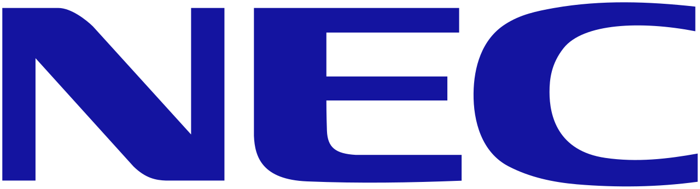
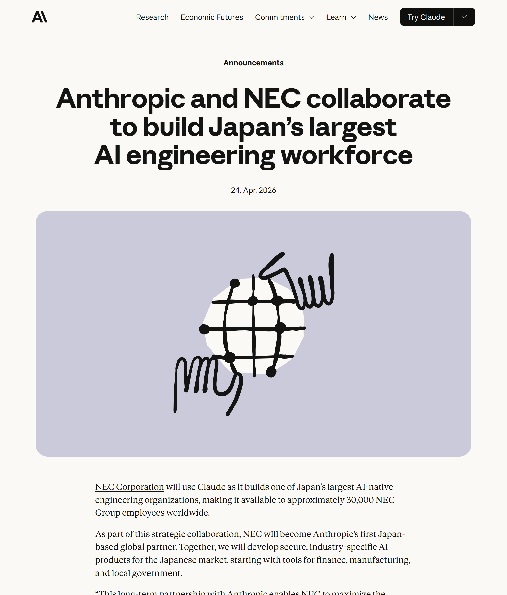

THE ANTHROPIC × NEC DEAL
30,000 NEC seats. The headline number.
30,000
BUT.
Anthropic just out-flanked OpenAI in Japan
anthropic.com/news/anthropic-nec

FOUNDED 1899
1899
EDISON ERA
NEC founded — telegraph cables
2026
AI-NATIVE
Anthropic's first Japan partner
127 YRS
OVERNIGHT
Edison-era → AI-native engineering
telegraph cables → AI-native engineering
FIRST
Anthropic's first Japan-based global partner
1st
JAPAN-BASED
GLOBAL PARTNER
GLOBAL PARTNER
0
BEFORE
THIS DEAL
THIS DEAL
THE ROLLOUT
30,000 of 105,000 employees
0
CLAUDE
SEATS
SEATS
0
TOTAL NEC
GROUP
GROUP
~29% of the entire group
CLIENT ZERO
One of Japan's largest
AI-native engineering
teams
PROGRAM
CLIENT ZERO
Shipping Claude internally first
BLUSTELLAR SCENARIO
Plugging into NEC's
customer platform
FINANCE
MANUFACTURING
LOCAL GOVT
SECURITY OPS
If you build on Claude in regulated markets
WHY NOW?
The receipts.
17.7M → 17.7M
Claude Code installs · 4 months
$3B/yr
OpenAI × SoftBank
$10B
Microsoft Japan · 5 partners
Anthropic went deeper.
WHO'S NEXT?
The Japan AI race just got real
FUJITSU
HITACHI
NTT DATA
Subscribe→